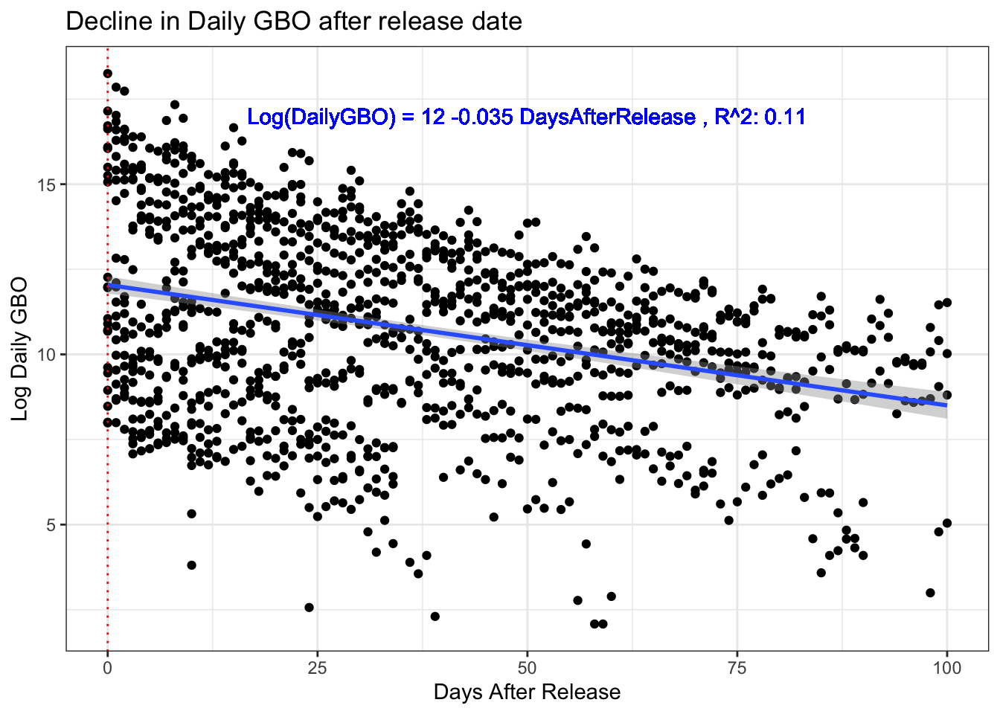
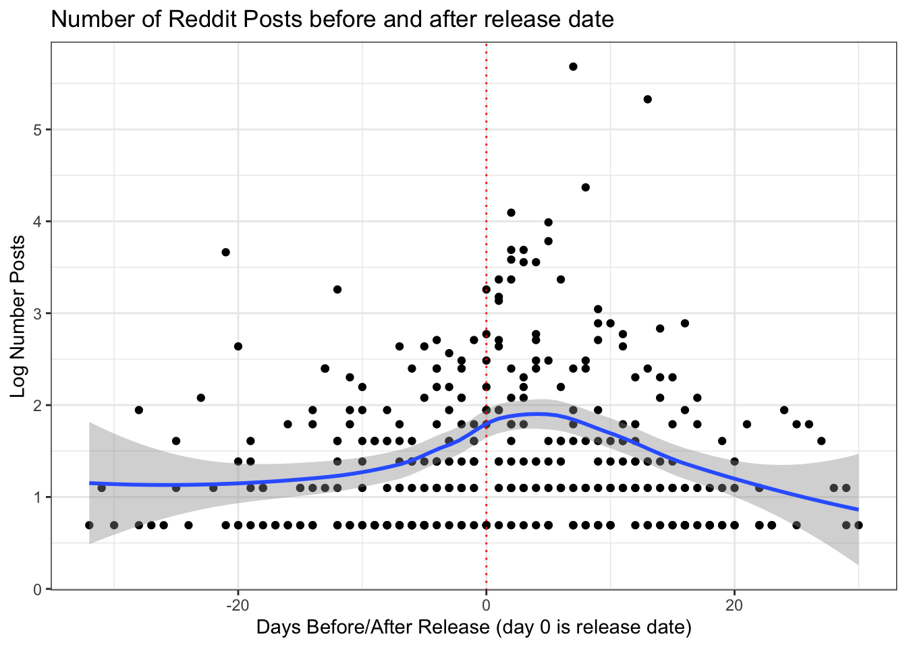
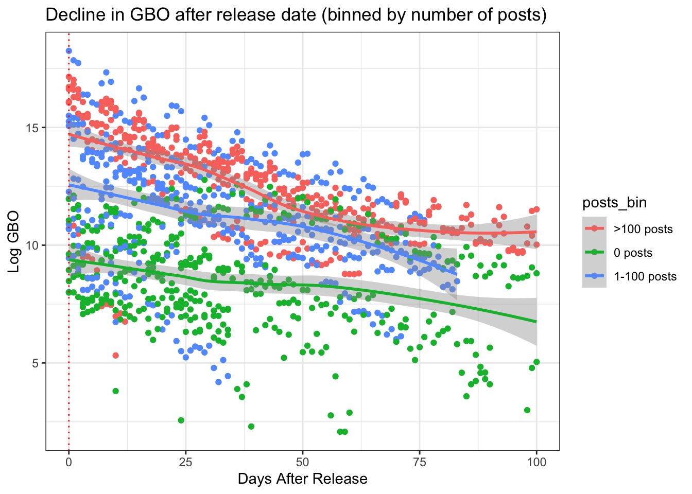
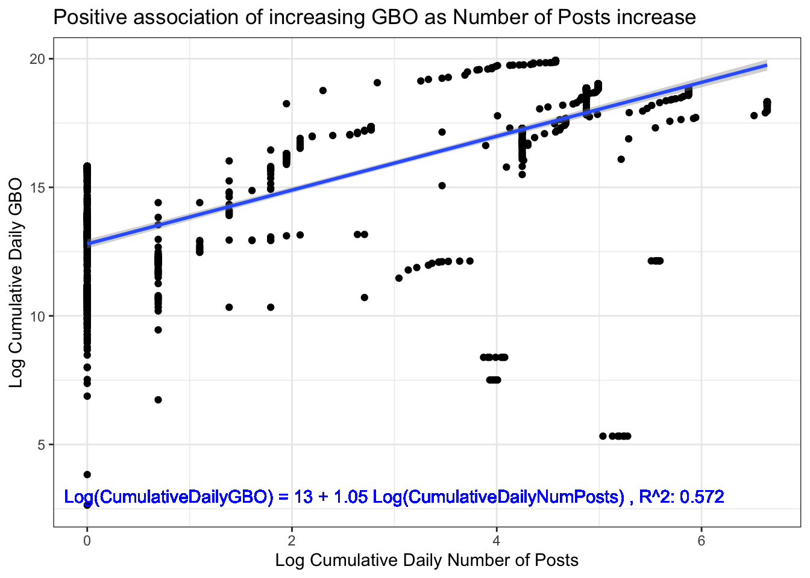

Summary
Movies generally make the most box office earnings (Gross Box Office, GBO) during their opening week, after which the earnings decline in subsequent weeks. In this study, the goal is to see if and what effect social media “chatter” (specifically posts on Reddit) for a movie will have on its GBO after its release. Do more posts of the movie lead to a slower decline in movie’s GBO?
Data sources:
The data was obtained from the following sources, and is limited to the month of May 2015
- Reddit: using movies subreddit to determine number of posts
- Box office mojo: to obtain daily movie GBO
Data dictionary
- Date: date of observation
- Movie: name of the movie
- GBO: Gross Box Office earned by the movie on that day
- Number of posts: posts on movies subreddit for the movie on that day
- DaysFromToRelease: # days before or after release, calculated as date - release_date. A negative value means number of days away from release, and a positive value means number of days after release
Analysis
What is the daily GBO trend after the movie is released?

- Declining trend of daliy GBO after release date
- On average, for each day after release, GBO declines by 3.5%
- Appears some movies decline faster than others
How number of posts on Reddit vary before and after release date?

- Number of posts increase as movie’s release date approaches, then declines. With the peak about 5 days after release date.
Do more posts have an impact on how GBO declines?

General observations:
- GBO, of movies with more posts overall, declines sharply then flattens out (red and blue dots)
- For movies with lower number of posts, GBO declines at a steady rate then drops off quickly (green dots)
Does increasing posts increase GBO? 
- On average, a 1% increase in daily number of posts, increases daily GBO by 1%
Conclusion
- There appears to be a positive association between the number of posts on Reddit and movie’s daily GBO. We can hypothesize that people are influenced to go see the movie, if there are more people posting on social media about that movie.
- Popular movies (that have more posts on Reddit) have a slower sharp decline from opening GBO but it flattens out
- Less popular movies (that have less posts on Reddit) have an initial slower decline from opening GBO but then it drops off quickly